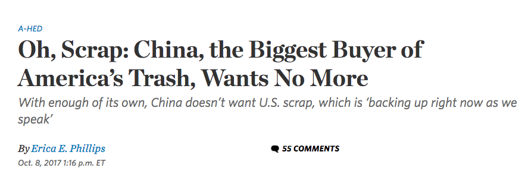

Manufactured Landscape is all China's fault?
Date: 10-09-2017
Source: Bullshit I try to debunk; A doucumentary (view intro)
Summary
I watched "Manufactured Landscape" documentary on one of my classes. This
film gives close picture of how the world largest factory worked in China
in 2004. It emphsizes on the large scale and heavy workload of those factory workers.
Then, the film suddently
starts to show some very miserable views of environmental distructions all over the world. Then, the film turns
back to trash and wastes thrown into the rivers by a Chinese factory again.
And it further explains many countries export raw material to China to have Chinese
factories manufactured them and exported the finished manufacture goods oversee again.
The whole film is filled with sentimental music.
Argument
The film seems like to say that the world's environmental destructions were caused by China because it shows the images of the Chinese factories and then environmental destructions over the the world. My confusion about this is why the factories in China cause the pollution and demages in other part of the world directly. This mutates the fact by using unfair comparisons. It makes more sense if the film producer depicts pollutions in other parts of the world too, not just targeting China. Also for me, this only tells the part of the story. The other part of the story is that China, as a fast developing country in 2004, was the world largest manufacturing land, receiving imports of wastes and scraps from many developed countries. Then, China manufactured goods out of those usable wastes and then exported them back. How about those wastes that are not usable. China has to figure out herself. Notice here, China did not produce those wastes but was the just recipient of those wastes. Unfortuately, China could not ship those unusable wastes back to where they belong to. Furthermore, isn't this how globalization works? Were China not to receive those wastes, would the environment and other developed countries be better off? The answer might not be so. I just read an article from Wall Street Journal the other day talking about U.S. had to spend extra cost to rent 60,000 square feet warehourses to put waste paper scraps, which were supposed to export to China, because China just made strict rules of limiting importing wastes. Now, U.S. tries to figure out how to deal with that gigantic amount of paper scraps. (You can read the full story here)
Conclusion
This film makes the statement that only tell the partial story and mutate the fact. Furthermore, the documentory is facing to the public with educational purpose. Thus, the magnitude of Bullshit should be 4. The intention of this BS may be good, despite of targeting at China, because it warns people all over the world to protect environment.